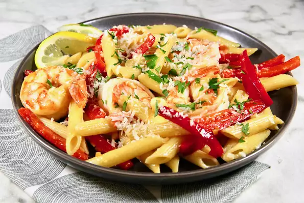

Best Easy Lemon-Shrimp Pasta

Last but not least our lemon-shrimp is a quick fix it is lemony but tasty and light
Last on our list will be the tasty lemony Easy Lemon-Shrimp pasta made from some of the best and fresh products
from penne, butter, red bell pepper strips, fresh garlic. shrimp etc followed with step by step instructions
on
how to put the finishing touch on a great family dinner.
Ingredients
- 6 ounces penne pasta
- 2 tablespoons butter
- 1 cup red bell pepper strips
- 1 teaspoon minced fresh garlic
- 1/2 pound uncooked medium shrimp, peeled and deveined
- 3 tablespoons lemon juice
- 1/2 teaspoon lemon zest, or more to taste
- 2 tablespoons Parmesan cheese, or to taste (optional)
- 1 tablespoon chopped fresh parsley, or to taste (optional)
Steps
- Bring a large pot of lightly salted water to a boil. Add penne and cook,
stirring occasionally, until
tender yet firm to the bite, about 11 minutes. drain and set aside.
- Meanwhile, melt butter in a 10-inch skillet over medium heat. Add red pepper strips
and garlic; cook until
peppers are tender and crisp, 2 to 3 minutes. Add shrimp and lemon juice; stir
constantly until shrimp turn
bright pink on the outside and the meat is opaque, 4 to 6 minutes.
Add cooked pasta and lemon zest and toss
lightly to coat. Serve sprinkled with Parmesan cheese and parsley.